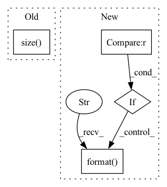

Pattern ID :39145
Before Change
loader["valid"] = TrainDataLoader(valid_dataset, batch_size=args.batch_size, shuffle=False)
for mixture, sources in loader["train"]:
print(mixture.size() , sources.size())
raise ValueError("Stop")
if args.use_cuda:After Change
print("Does NOT use CUDA")
// Optimizer
if args.optimizer == "sgd" :
optimizer = torch.optim.SGD(model.parameters(), lr=args.lr, weight_decay=args.weight_decay)
elif args.optimizer == "adam":
optimizer = torch.optim.Adam(model.parameters(), lr=args.lr, weight_decay=args.weight_decay)
elif args.optimizer == "rmsprop":
optimizer = torch.optim.RMSprop(model.parameters(), lr=args.lr, weight_decay=args.weight_decay)
else:
raise ValueError("Not support optimizer {}".format( args.optimizer) )
// Criterion
if args.criterion == "l2loss":In pattern: SUPERPATTERN
Frequency: 3
Non-data size: 4
Instances Fragment ID: 111346418
Project Name: tky823/dnn-based_source_separation
Commit Name: 4923e8361e1425356e840fe5bff2a1550c9e75d4
Time: 2020-09-12
Author: delta9guitar97@gmail.com
File Name: egs/librispeech/adanet/local/train.py
M Class Name: AnonimousClass
N Class Name: AnonimousClass
M Method Name: main(1)
N Method Name: main(1)
M Parent Class:
N Parent Class:
M File Name: egs/librispeech/adanet/local/train.py
N File Name: egs/librispeech/adanet/local/train.py
M Start Line: 59
M End Line: 65
N Start Line: 60
N End Line: 94
Before Change
//rgb_center_img_tensor = input_center[0:3]
//mask = (input_center[3] + input_first[3] + input_last[3]) / 2
print ("Input size", input.size() )
center_img = vid_tensor_to_numpy(rgb_center_img_tensor*mask)[0]
center_img = cv2.cvtColor(center_img, cv2.COLOR_RGB2BGR)
After Change
if (i == 0):
print("Embedd size", embedd.size())
if i % log_interval == 0 :
print("Encoded [{}/{}]".format( i, len(data)) )
embeddings = torch.cat(embeddings, dim=0)
return embeddings, vid_paths
Fragment ID: 111346420
Project Name: rvl-lab-utoronto/video_similarity_search
Commit Name: e5eeb446b18f40a7af123ef6d93ea24c32cc0538
Time: 2020-08-28
Author: salar77h@gmail.com
File Name: clustering/cluster_masks.py
M Class Name: AnonimousClass
N Class Name: AnonimousClass
M Method Name: get_embeddings_mask_regions(3)
N Method Name: get_embeddings_mask_regions(3)
M Parent Class:
N Parent Class:
M File Name: clustering/cluster_masks.py
N File Name: clustering/cluster_masks.py
M Start Line: 46
M End Line: 109
N Start Line: 51
N End Line: 127
Before Change
acc1, acc5 = accuracy(output, target, topk=(1, 5))
losses.update(loss.item(), images.size(0))
top1.update(acc1.item(), images.size(0))
top5.update(acc5.item(), images.size( 0) )
// measure elapsed time
batch_time.update(time.time() - end)After Change
if i % args.print_freq == 0:
progress.display(i)
if visualize is not None :
visualize(images[0], "val_{}".format( i) )
print(" * Acc@1 {top1.avg:.3f}".format(top1=top1))
Fragment ID: 111346425
Project Name: thuml/transfer-learning-library
Commit Name: cd37e35d82dc8dde35adc8902e74a2dc18d01bb9
Time: 2021-08-24
Author: 13126830206@163.com
File Name: examples/finetune/image_classification/utils.py
M Class Name: AnonimousClass
N Class Name: AnonimousClass
M Method Name: validate(5)
N Method Name: validate(4)
M Parent Class:
N Parent Class:
M File Name: examples/finetune/image_classification/utils.py
N File Name: examples/finetune/image_classification/utils.py
M Start Line: 112
M End Line: 135
N Start Line: 68
N End Line: 104